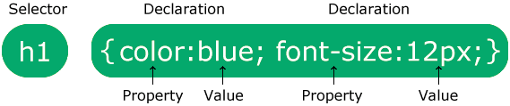

CSS significa hojas de estilo en cascada
CSS describe cómo se deben mostrar los elementos HTML en la pantalla, en papel o en otros medios.
CSS ahorra mucho trabajo. Puede controlar el diseño de varias páginas web a la vez.
Las hojas de estilo externas se almacenan en archivos CSS
CSS se utiliza para definir estilos para sus páginas web, incluido el diseño, la disposición y las variaciones en la visualización para diferentes dispositivos y tamaños de pantalla.
Una regla CSS consta de un selector y un bloque de declaración.
El selector apunta al elemento HTML al que desea aplicar estilo.
El bloque de declaración contiene una o más declaraciones separadas por punto y coma.
Cada declaración incluye un nombre de propiedad CSS y un valor, separados por dos puntos.
Varias declaraciones CSS están separadas por punto y coma y los bloques de declaración están rodeados por llaves.
En este ejemplo, todos los elementos <p> estarán alineados al centro, con un color de texto rojo:
p {<p>es un selector en CSS (apunta al elemento HTML al que desea aplicar estilo: <p>).
colores una propiedad y redes el valor de la propiedad
text-alignes una propiedad y centeres el valor de la propiedad
Los selectores CSS se utilizan para "buscar" (o seleccionar) los elementos HTML a los que desea aplicar estilo.
Podemos dividir los selectores CSS en cinco categorías:
Esta página explicará los selectores CSS más básicos.
El selector de elementos selecciona elementos HTML según el nombre del elemento.
Aquí, todos los elementos <p> de la página estarán alineados al centro, con un color de texto rojo.
p {El selector de identificación utiliza el atributo de identificación de un elemento HTML para seleccionar un elemento específico.
La identificación de un elemento es única dentro de una página, por lo que el selector de identificación se usa para seleccionar un elemento único.
Para seleccionar un elemento con una identificación específica, escriba un carácter almohadilla (#), seguido de la identificación del elemento.
La siguiente regla CSS se aplicará al elemento HTML con id="para1".
#para1 {Nota: ¡ Un nombre de identificación no puede comenzar con un número!
El selector de clases selecciona elementos HTML con un atributo de clase específico.
Para seleccionar elementos con una clase específica, escriba un carácter de punto (.), seguido del nombre de la clase.
En este ejemplo, todos los elementos HTML con class="center" serán rojos y estarán alineados en el centro.
.center {También puede especificar que una clase solo deba afectar a elementos HTML específicos.
En este ejemplo, solo los elementos <p> con class="center" serán rojos y estarán alineados al centro.
p.center {Los elementos HTML también pueden hacer referencia a más de una clase.
En este ejemplo, el estilo del elemento <p> se ajustará a class="center" y class="large".
<p class="center large">This paragraph refers to two classes.Nota: ¡ El nombre de una clase no puede comenzar con un número!
El selector universal (*) selecciona todos los elementos HTML de la página.
La siguiente regla CSS afectará a todos los elementos HTML de la página.
* {El selector de agrupación selecciona todos los elementos HTML con las mismas definiciones de estilo.
Mire el siguiente código CSS (los elementos h1, h2 y p tienen las mismas definiciones de estilo).
Será mejor agrupar los selectores para minimizar el código.
Para agrupar selectores, separe cada selector con una coma.
En este ejemplo hemos agrupado los selectores del código anterior.
h1 {| Selector | Example | Example description |
|---|---|---|
| #id | #firstname | Selects the element with id="firstname" |
| .class | .intro | Selects all elements with class="intro" |
| element.class | p.intro | Selects only elements with class="intro" |
| * | * | Selects all elements |
| element | p | Selects all elements |
| element,element,.. | div, p | Selects all elements and all <p> elements |
Cuando un navegador lee una hoja de estilo, formateará el documento HTML de acuerdo con la información de la hoja de estilo.
Hay tres formas de insertar una hoja de estilo:
Con una hoja de estilo externa, puedes cambiar el aspecto de un sitio web completo cambiando solo un archivo.
Cada página HTML debe incluir una referencia al archivo de hoja de estilo externo dentro del elemento
, dentro de la sección .
Se puede utilizar una hoja de estilo interna si una sola página HTML tiene un estilo único.
Se puede utilizar un estilo en línea para aplicar un estilo único a un solo elemento.
Para usar estilos en línea, agregue el atributo de estilo al elemento relevante. El atributo de estilo puede contener cualquier propiedad CSS.
Si se han definido algunas propiedades para el mismo selector (elemento) en diferentes hojas de estilo, se utilizará el valor de la última hoja de estilo leída.
Supongamos que una hoja de estilo externa tiene el siguiente estilo para el elemento.
¿Qué estilo se utilizará cuando se especifique más de un estilo para un elemento HTML?
Todos los estilos de una página se "en cascada" en una nueva hoja de estilos "virtual" según las siguientes reglas, donde el número uno tiene la máxima prioridad:
Por lo tanto, un estilo en línea tiene la máxima prioridad y anulará los estilos externos e internos y los valores predeterminados del navegador.
Un contorno es una línea dibujada fuera del borde del elemento.
Este elemento tiene un borde negro y un contorno verde con un ancho de 10px.
Esquema CSS
Un contorno es una línea que se dibuja alrededor de los elementos, FUERA de los bordes, para que el elemento "resalte".
CSS tiene las siguientes propiedades de esquema:
Nota: ¡ El contorno difiere de los bordes ! A diferencia del borde, el contorno se dibuja fuera del borde del elemento y puede superponerse a otro contenido. Además, el contorno NO forma parte de las dimensiones del elemento; El ancho y alto total del elemento no se ven afectados por el ancho del contorno.
La propiedad outline-style especifica el estilo del contorno y puede tener uno de los siguientes valores:
El siguiente ejemplo muestra los diferentes valores de outline-style:
Ejemplo
Demostración de los diferentes estilos de contorno:
Un contorno de puntos.
Un contorno discontinuo.
Un contorno sólido.
Un doble contorno.
Un contorno ranurado 3D. El efecto depende del valor de outline-color.
Un contorno estriado 3D. El efecto depende del valor de outline-color.
Un contorno insertado en 3D. El efecto depende del valor de outline-color.
Un esquema de inicio en 3D. El efecto depende del valor de outline-color.
Nota: Ninguna de las otras propiedades del esquema (sobre las cuales aprenderá más en los próximos capítulos) tendrá NINGÚN efecto a menos que la propiedad outline-style esté configurada
La propiedad especifica el tipo de método de posicionamiento utilizado para un elemento (estático, relativo, fijo, absoluto o pegajoso).position
La propiedad especifica el tipo de método de posicionamiento utilizado para un elemento.position. Hay cinco valores de posición diferentes:
A continuación, los elementos se colocan en la parte superior, inferior, izquierda y derecha propiedades. Sin embargo, estas propiedades no funcionarán a menos que la propiedad position se establezca primero. También funcionan de manera diferente según el valor de position.
position: static;: Los elementos HTML se colocan estáticos de forma predeterminada. Los elementos posicionados estáticamente no se ven afectados por las propiedades superior, inferior, izquierda y derecha. Un elemento con position: static; no se coloca de ninguna manera especial; siempre se posiciona de acuerdo con el flujo normal de la página.
position: relative; Un elemento con position: relative; se coloca en relación con su posición normal. Si se establecen las propiedades superior, derecha, inferior e izquierda de un elemento con una posición relativa, se producirá para ser ajustado lejos de su posición normal. El resto del contenido no se ajustará para que quepa en ningún hueco dejado por el elemento.
position: fixed;position: fixed;: Un elemento con position: fixed; se coloca en relación con la ventana, lo que significa que siempre permanece en el mismo lugar incluso si se desplaza la página. Las propiedades top, right, bottom e left se utilizan para colocar el elemento. Por ejemplo, el siguiente código CSS coloca un elemento con position: fixed; en la esquina inferior derecha de la ventana del navegador:
position: absolute; Un elemento con position: absolute; se coloca en relación con su elemento padre más cercano que tenga una posición establecida. Si no hay ningún elemento padre con una posición establecida, se colocará en relación con el cuerpo del documento. Las propiedades top, right, bottom e left se utilizan para colocar el elemento. Por ejemplo, el siguiente código CSS coloca un elemento con position: absolute; en la esquina superior derecha de su elemento padre:
position: sticky;Un elemento con position: sticky; se comporta como position: relative; hasta que alcanza un umbral de desplazamiento específico, luego se comporta como position: fixed;. Las propiedades top, right, bottom e left se utilizan para colocar el elemento. Por ejemplo, el siguiente código CSS coloca un elemento con position: sticky; en la parte superior de su contenedor hasta que se desplaza fuera de la vista, momento en el que se fija en la parte superior de la ventana del navegador:
Da clic aquí para ir a las página web de Practicas.